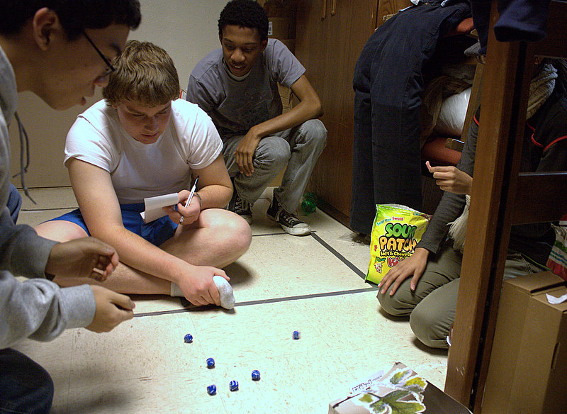

Farkle is a simple dice game that rewards the risk taker. To play Farkle, all you need is 6 dice, and a pen and paper.

You need a scorekeeper, and then decide who goes first.
The scorekeeper adds up the 1-5 players scores for each turn. Each player rolls one die , and the highest roll goes first. If a tie
the 2 people that tied go again. Once there is a first player, then play continues to the left.
Scoring in Farkle
You have to achieve 500 points before you can start to accumulate points in a single roll. When you achieve 500 points you may
choose to stop your turn to not loose your 500 points. You can choose to roll again which i call going over the top.
5's = 50 points
1's = 100 points
3 1's = 1000 points
3 2's = 200 points
3 3's = 300 points
3 4's = 400 points
3 5's = 500 points
3 6's = 600 points
4 of a kind = 1000 points
5 of a kind = 2000 points
6 of a kind = 3000 points
straight all dice = 1500 points
3 pairs = 1500 points
4 of a kind and a pair = 1500 points
2 3 of a kind = 2500 points
When it is your turn
You take all 6 dice in your hand, roll them and if one of the dice falls off the table, you just re-roll that one die.
If you have scored a 1, 5, or any other score as indicated in the table above, set aside those dice. Now, roll the remaining dice.
This forms your total score for that round. Again, to repeat myself, if you are EVER able to take all six dice as a score you automatically
can go over the top, and roll all six dice again. But, if you at any time of a roll can not score any points you have just FARKLED!!
This means you just lost all of your running total points, and your turn is done.
Are you the winner?
The first person to reach or pass the agreed upon total score, usually it is 10,000 points. Then sometimes the most exciting part of
the game happens where all the other players get one more turn to beat the winners score. Player with the most points wins.